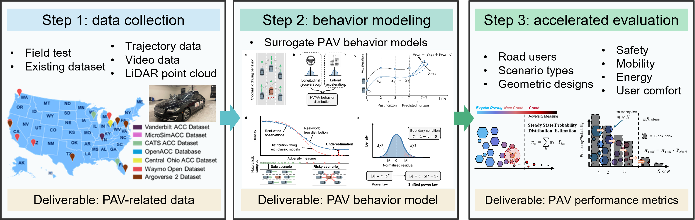

OpenPAV
An open Production Automated Vehicle platform for data collection, behavior modeling, and performance evaluation.
Platform Overview
OpenPAV is an open-source ecosystem for evaluating production automated vehicles (PAVs). It combines multi-source traffic data, behavior modeling tools, and benchmark evaluation workflows to support transparent comparison across PAV brands.
Because PAV manufacturers often do not disclose internal controllers, OpenPAV adopts a data-driven pipeline that does not require access to proprietary control algorithms. The platform is designed to build a scientific billboard that ranks PAV performance and provides reliable references for researchers, industry, government, and the public.
Key Features
- Comprehensive Data Repository: OpenPAV aggregates diverse PAV-related datasets from multiple providers and regions. Beyond PAV trajectories, the platform can incorporate supporting traffic context data such as human-driven vehicle (HV) trajectories, vulnerable road user (VRU) data, and road geometry information to improve evaluation realism.

-
Data-Driven Evaluation Pipeline: OpenPAV evaluates tested AVs without requiring their controllers to be
open-sourced. The method relies on data and surrogate behavior models, which makes cross-brand third-party evaluation feasible.
- Step 1 - Data Collection: collect PAV and supporting traffic datasets.
- Step 2 - Behavior Modeling: learn surrogate models from raw traffic data.
- Step 3 - Accelerated evaluation: generate targeted scenarios and compute statistical metrics.

- Benchmark Results: OpenPAV reports four independent rankings for safety, mobility, user comfort, and fuel-use proxy, with 1 indicating the best rank in each dimension and no composite score. The current results demonstrate the platform workflow using eight calibrated vehicle models in generated single-lane ACC car-following scenarios; they are not a comprehensive real-world ranking of vehicle models or brands. The fuel-use proxy compares trajectories using one common hypothetical VT-Micro model, not actual vehicle energy use or Tesla electricity consumption.
- Community Collaboration: the platform supports continuous contribution from data providers, modeling teams, and evaluation contributors to improve benchmark quality and reproducibility.
What's New
- June 1, 2026: OpenPAV helped organize the Automated Vehicle Trajectory Modeling Challenge, organized by the IEEE ITSS Emerging Transportation Technology Testing (ET3) Technical Committee.
- May 2026: A new dataset: UGA OPD Mixed Traffic Dataset is incorporated into the platform.
- March 2026: The project has launched a new interface. The code and demo billboard are released.
- November 2024: Initial project startup with installation and user guides.